arXiv 2601.16163 · cs.AI · v1 2026 年 1 月 22 日 · 中文精读
Cosmos Policy: Fine-Tuning Video Models for Visuomotor Control and Planning
作者 Moo Jin Kim、Yihuai Gao、Tsung-Yi Lin、Yen-Chen Lin、Yunhao Ge、Grace Lam、Percy Liang、Shuran Song、Ming-Yu Liu、Chelsea Finn、Jinwei Gu，来自 NVIDIA 和斯坦福大学。
关于这份精读。这篇论文在 arXiv 上以 CC BY 4.0 发布，PDF 里没有和它矛盾的版权声明（检查过全文，没有 “All rights reserved”）。论文没有写会议。这里按原文顺序覆盖正文 7 节和附录 A.1 到 A.4.2，小节编号和原文一致，用自己的话整理，不是逐字翻译。原文公式都没有编号，这里也不编号。表格数字照录原文。
原图。图 1 到图 12 从 arXiv PDF（v1）裁切，只做了裁切、缩放和格式转换，没有改内容。CC BY 本来允许这样用；这一批论文统一由站点作者决定放原图，图注里照样写明作者、出处和许可。图下文字是我写的。本页的“读者注”是整理时核算或对照发现的，不属于论文内容，页尾有汇总。
代码。官方代码 NVlabs/cosmos-policy，Apache-2.0 许可。我读的是 18a2acc（2026-01-22，和 arXiv v1 同一天），只读，没有运行。注意模型权重是另一个许可：Hugging Face 上的 Cosmos-Policy-*-Predict2-2B 写的是 NVIDIA One-Way Noncommercial License（NSCLv1），只能非商业使用。
想用视频生成模型做机器人策略，以往的做法通常要两段训练（先微调视频模型，再训练一个动作模块），或者加新部件（单独的动作扩散头、逆动力学模型）。这篇的做法最省事：拿 Cosmos-Predict2-2B-Video2World（NVIDIA 的 2B 隐空间视频扩散模型），一行网络结构都不改，只在机器人演示上微调一段。
关键是“隐帧注入”（latent frame injection）：视频模型的输入本来是一串 VAE 隐帧。作者在图像序列里插入几张全零图占位，VAE 编码后把这些占位隐帧整块改写成本体状态、动作块、价值（各自缩放到 [−1, 1]，重复铺满一个隐帧）。多个相机的画面也只是多插几帧。于是“当前观测 → 动作 → 未来观测 → 未来价值”成了一段视频，视频扩散的去噪目标就同时学到了策略、世界模型和价值函数。
读完我认为最值得记住的三点：一是“不改结构”靠的是 Cosmos 原本就有的“按帧决定哪些是干净条件、哪些要去噪”的掩码，三种功能只是三种掩码（图 12）；二是让策略同时预测未来画面这个辅助目标贡献很大（表 5 第 4 行）；三是 LIBERO 的数据和评测细节和 OpenVLA 版很像但不完全一样：它自己重生成了数据（1,700 条成功演示，不是 1,693 条），图像只上下翻转而不是旋转 180°（读者注 15、LIBERO 设置）。
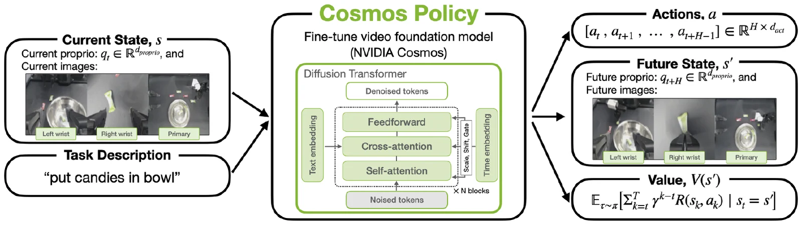
动机。大视频生成模型（Cosmos、Wan、CogVideoX、HunyuanVideo 等）能生成物理上合理、时间上连贯的视频。VLA 的骨干是视觉-语言模型，学的是静态图文对里的语义；视频模型从海量视频里学到的是时间因果、隐含的物理和运动规律。作者认为这些时空先验对机器人更有用。
已有做法的问题。把视频模型用到操作上的工作很多，但通常要多段训练（先在机器人视频上微调，再训动作模块），还要加新部件，比如单独的动作扩散器或逆动力学模型。另一类工作训练统一的视频-动作模型（UVA、UWM），但结构是自己设计的，用不上预训练视频模型的权重。
做法。Cosmos Policy 从 Cosmos-Predict2-2B 出发，只在目标平台的演示上做一段后训练，不改结构，直接用视频模型自己的扩散目标去学动作分布。理由是视频模型擅长建模高维、多峰的分布，又能生成几百帧连贯视频，那么把动作当成序列里的“一帧”应该也学得动。模型同时生成动作、未来状态图像和未来状态价值（期望累积奖励），三者都编码成隐帧。有了未来状态和价值，就能做 best-of-N：采样多个候选动作，想象各自的结果，按价值排序，执行最好的那个。
结果摘要。直接当策略用时，LIBERO 98.5%、RoboCasa 67.1%，超过从头训练的扩散策略、基于视频的策略（UVA、Video Policy）和微调过的 VLA（π0.5、OpenVLA-OFT、CogVLA、UniVLA、DP-VLA、GR00T-N1.5）；ALOHA 真机平均 93.6 分最高。加上模型规划后，两个难的真机任务平均任务完成度高 12.5 个百分点。作者还比较了基于模型（世界模型 + 状态价值）和无模型（直接学 Q 值）两种规划。
基于视频的机器人策略。一类先在机器人数据上微调视频模型，再训单独的动作模块从生成的画面里出动作（Video Policy、FlowVLA、VPP、Genie Envisioner、UnifoLM-WMA、Vidar 等）；另一类训统一的视频-动作模型同时预测未来帧和动作（UVA、UWM），但不用预训练视频模型。本文是单阶段微调，直接让预训练视频模型在自己的隐扩散过程里生成动作，以及本体和价值。
视觉-语言-动作模型。RT-2、OpenVLA、π0.5、UniVLA、CogVLA 在大规模模仿数据上微调视觉-语言模型，语义泛化强，但骨干主要在静态图文上训练。本文换成从视频预测里学到时空动态的骨干，假设它更适合做底层控制。
世界模型和价值函数。Dyna、MBPO、TD-MPC、Dreamer 系列展示了把规划和学习结合的好处。较新的有 FLARE（在扩散 Transformer 序列里加可学习的未来 token，预测未来状态的紧凑表示）、SAILOR（单独的世界模型和奖励模型，用 MPPI 搜索）、Latent Policy Steering（用光流作动作表示预训练世界模型，再单独训价值函数引导策略）。这些工作的策略、世界模型、价值函数是分开的模块，而且多数从头训练；本文用一个从视频模型初始化的网络同时当三者。
Cosmos 视频模型。初始化用的是 Cosmos-Predict2-2B-Video2World：输入一张起始图和一段文字，预测后续帧。它在 Wan2.1 时空 VAE 的连续隐变量上工作，用 EDM 的去噪得分匹配训练。去噪器 \(D_\theta\) 在噪声水平 \(\sigma\) 下的目标是
\(x_0\) 是 VAE 编码后的干净图像序列，\(c\) 是 T5-XXL 编码的文本，\(n\sim\mathcal N(0,\sigma^2I)\)。\(D_\theta\) 是扩散 Transformer（DiT），用交叉注意力读文本，用自适应层归一化读 \(\sigma\)。
Wan2.1 VAE 把 \((1+T)\times H\times W\times3\) 的视频压成 \((1+T')\times H'\times W'\times16\)，其中 \(T'=T/4\)，\(H'=H/8\)，\(W'=W/8\)。第一帧单独编码、不做时间压缩，方便用一张图做条件；之后每 4 帧压成 1 个隐帧。训练时用条件掩码让第一帧保持干净，后面的帧加噪声。
MDP 和模仿学习。操作任务写成有限时域 MDP \(\langle S,A,T,R,H\rangle\)。奖励是稀疏的：\(t 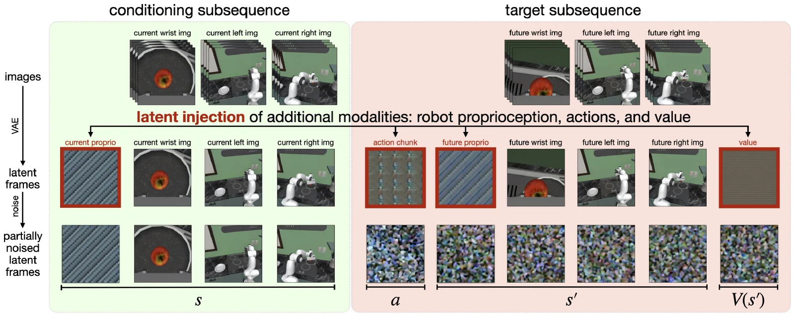 世界模型和价值函数。世界模型 \(\hat T:S\times A\to\Pi(S)\) 由当前状态和动作预测未来状态。策略 \(\pi\) 在状态 \(s\) 的价值，在稀疏奖励下化简为 作者直接用蒙特卡洛回报：回放里每个转移标上观测到的 \(\gamma^{H-t}R(s_H,a_H)\)。论文也说明，真实状态不完全可观测，世界模型预测的其实是未来观测（本体和图像），为了好读仍叫“状态”。 结论：不加任何网络部件，所有新东西都以“隐帧”的形式插进视频扩散序列。 原版 Cosmos-Predict2 只接一张图和一段文字，生成单视角短视频；不支持本体输入，也不输出动作或价值，也没有多视角。作者在隐帧序列里插入新帧：本体、动作块、价值这些新模态在隐空间插入；额外相机的画面更简单，直接在图像层面插入，再靠微调让模型适应。 例子：两个固定第三人称相机加一个腕部相机的平台，序列一共 11 个隐帧： 其中 2、6、7、11 是新模态，3、5、8、10 是额外视角（第三人称 1 算主相机）。新模态的写法：把 \(H'\times W'\times C'\) 的隐帧体积用归一化到 [−1, +1] 的数值重复填满。这个顺序就是 \((s,a,s',V(s'))\)，从左往右可以自回归地依次生成动作、未来状态、价值。\(s\) 和 \(s'\) 只是时刻 \(t\) 和 \(t+K\) 的观测（\(K\) 是动作块长度）：不用历史帧，也不预测多个未来时刻。只有一个第三人称相机、没有腕部相机的机器人，去掉对应帧，剩 7 个隐帧。第一个空白帧是 VAE“首帧单独编码”造成的实现细节，见附录 A.1。 LIBERO 只有一个第三人称相机（agentview）和一个腕部相机。代码 论文没写分辨率。代码里 复制次数 = 12,544 ÷ 元素数：LIBERO 动作块 16 × 7 = 112 → 正好 112 份；RoboCasa 32 × 7 = 224 → 56 份；ALOHA 50 × 14 = 700 → 17.92，不是整数；LIBERO 本体 9 维 → 1,393.8，也不是整数。附录 A.1 的公式默认能整除。代码（ 结论：同一条序列，换“哪些帧当干净条件、哪些帧要去噪”，就分别在训练策略、世界模型、价值函数。 每步训练抽一批 \((s,a,s',V(s'))\) 四元组（严格说是经验回报 \(G_t=\gamma^{H-t}R\)）。一半来自演示集，训练策略 \(p(a,s',V(s')\mid s)\)；另一半来自回放集，再对半分：一半训世界模型 \(p(s',V(s')\mid s,a)\)，一半训价值函数 \(p(V(s')\mid s,a,s')\)（图 12）。一开始“回放集”就是演示集加上失败的演示：LIBERO 和 RoboCasa 的演示在仿真里重放时约有 10% 到 20% 失败（遥操作时人的失误）；ALOHA 的数据收得仔细，没有失败演示，两个集合相同。 注意策略和世界模型都带辅助目标：策略不只学 \(p(a\mid s)\)，还要一起生成 \(s'\) 和 \(V(s')\)；世界模型也顺带生成 \(V(s')\)。§5.2 显示这些辅助监督能提高策略成绩。初始训练时价值以整个前缀 \((s,a,s')\) 为条件；之后在回放上精调时，可以用输入掩码只保留一部分：只看 \(s'\) 就是状态价值 \(V(s')\)，只看 \((s,a)\) 就是 \(Q(s,a)\)。 并行还是自回归解码。因为模型既学了联合分布也学了条件分布，推理时既可以一次并行生成 \((a,s',V)\)，也可以从左到右分三次生成。并行更快；自回归质量可能更好，还允许策略和世界模型/价值用不同的检查点。直接当策略用时只需要动作，用并行解码，另两个输出丢掉；规划时用自回归。 论文说 50% 演示、25% 世界模型、25% 价值。代码 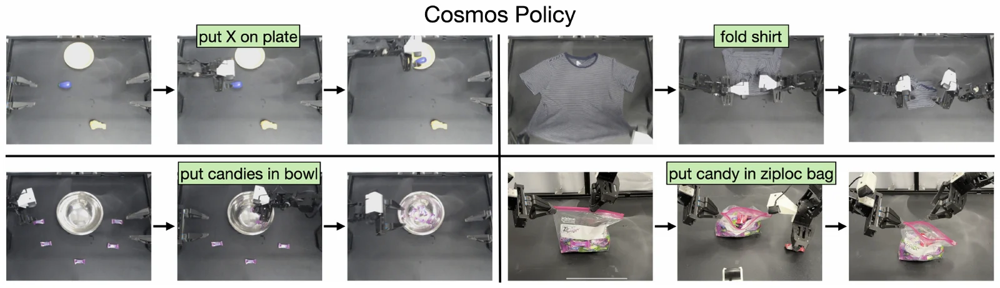 结论：先用自己的回放数据精调出一个“规划模型”，再做一层 best-of-N 搜索。 只在演示上训练不够做规划：演示几乎都是成功的，世界模型和价值函数只见过很窄的状态-动作分布。所以要部署策略收集回放（记录轨迹和结果：成功/失败，或分数），再精调。精调时把权重压向世界模型和价值：每批 90% 平分给世界模型和价值，10% 给策略。 双部署。原来的检查点当“策略模型”，精调后的检查点当“规划模型”（世界模型 + 价值）。这样规划模型是在原策略自己产生的同策略数据上训练的。 best-of-N。(1) 从策略采 N 个动作候选；(2) 规划模型为每个候选预测未来状态和价值；(3) 执行预测价值最高的那个。为了更准、也为了表达可能多峰的未来，每个动作查询世界模型 3 次，每个未来状态查询价值 5 次，每个候选共 15 个价值。聚合用“多数均值”：先按固定阈值看多数预测成功还是失败，再在多数那一组里求平均。这比直接平均更不怕离群值，尤其在价值预测两极分化时。用 N 张 GPU 并行，执行整个动作块（不做滚动时域的部分执行），以免再增加计算。 回报怎么算。 阈值。 自己画的 · 11 幕 3D 框架动画 整个框架拆成 11 幕：总览、LIBERO 一步数据怎样变成 33 张图和 9 个隐帧、隐帧注入（第 3 幕当场算复制次数）、DiT 和逐帧噪声、三种训练掩码（第 5 幕，对应图 12）、噪声分布（当场算）、并行解码、回放和价值、best-of-N 规划（第 9 幕）、LIBERO 评测协议、结果表。可以暂停、拖进度、旋转画面、切换开关。 四个问题：(Q1) 直接当策略用，和最好的模仿学习策略比怎样？(Q2) 各部件多重要？(Q3) 能不能从回放里学到准确的世界模型和价值并有效规划？(Q4) 用世界模型 + 状态价值搜索，还是直接用 Q 值（无模型）搜索更好？ LIBERO。单臂 Franka Panda。四个套件 Spatial、Object、Goal、Long（也叫 LIBERO-10），分别考空间布局、物体、语言目标、长时域。每个套件 10 个任务 × 50 条演示 = 500 条。按 OpenVLA 的做法，策略训练只用成功演示，世界模型和价值用全部演示。（完整设置见LIBERO 设置。） RoboCasa。24 个厨房静态操作任务，单臂 Franka。沿用 GR00T N1、FLARE 等的协议：每个任务在 5 个不同户型和风格的场景里各测 10 次，共 50 次；24 个任务平均，3 个种子，共 3,600 次。评测只用没见过的物体实例，5 个场景里有 2 个的风格训练时没出现过。基准给每个任务 50 条人工遥操作演示，另有 1,000 条 MimicGen 生成的演示；以往工作表明数据越多分数越高，但这里为了比数据效率只用 50 条人工演示。预处理同 LIBERO。 ALOHA 真机。两只 ViperX 300 S 臂，三个相机（一个俯视、两个腕部）。控制频率从 50 Hz 降到 25 Hz 以省算力。所有策略都输入 14 个关节角、三张图和任务描述，预测 50 步动作块（2 秒），整块执行完再查询（Diffusion Policy 例外，用 48 步，因为实现要求 4 的倍数）。四个任务：put X on plate（80 条演示，考语言跟随）、fold shirt（15 条，长时域、接触多）、put candies in bowl（45 条，考多峰的抓取顺序）、put candy in ziploc bag（45 条，毫米级精度）。分域内和域外两种条件，每个方法共 101 次试验，所有方法用同一组固定初始状态。 结论：三个场景都是总分第一；LIBERO 和 RoboCasa 刷新纪录；真机上胜过 π0.5 和 OpenVLA-OFT+，虽然它们在大量机器人数据上预训练过，Cosmos Policy 没有。 对比方法：从头训练的扩散策略（Diffusion Policy、Dita），基于视频模型的策略（UVA、UWM、Video Policy），微调的 VLA（π0、π0.5、OpenVLA-OFT、CogVLA、UniVLA、DP-VLA、GR00T-N1.5）。真机只比在双臂任务上表现好的一组：Diffusion Policy、OpenVLA-OFT+、π0、π0.5。 表 1 · LIBERO 成功率 %（照录原文）。Cosmos Policy 每个套件 500 回合（10 任务 × 50），3 个种子，共 6,000 回合。· 看原表 ↗ 表 2 · RoboCasa 24 任务平均成功率 %（照录原文）。Cosmos Policy 每任务 50 次、3 个种子，共 3,600 次。· 看原表 ↗ 平均是四个套件的简单平均：Cosmos Policy \((98.1+100.0+98.2+97.6)/4=98.475\to98.5\)；其余各行也都对得上（Dita 92.25 → 92.3，π0 94.15 → 94.2，UniVLA 95.225 → 95.2，π0.5 96.85 → 96.9，CogVLA 97.35 → 97.4）。Cosmos Policy 每个套件是 3 × 500 = 1,500 回合，格子是 1/15 ≈ 0.067 个百分点：98.1 ≈ 1,472/1,500（98.13），98.2 = 1,473，97.6 = 1,464，100.0 = 1,500，都能凑出来。和 OpenWAM 的单种子 500 回合（格子 0.2 点）不同。表 2 的 RoboCasa 一行只有总平均，没有逐任务数字。 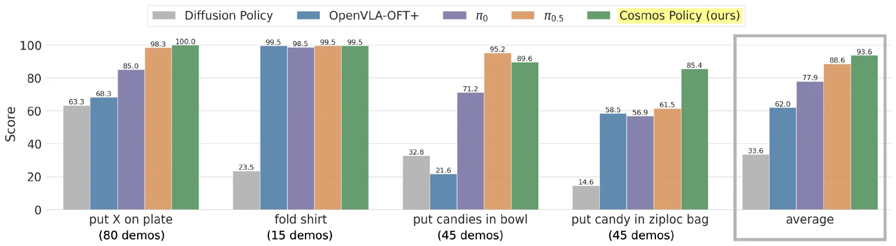 定性看，微调的 VLA 在前两个任务上很强，后两个任务（多峰抓取顺序、高精度抓取）上吃力。π0.5 前三个任务都很有竞争力，但在密封袋上经常第一下没抓住滑块（右臂），或者左臂没夹牢袋子左边；OpenVLA-OFT+ 经常伸到两颗糖中间而不是对准一颗，作者猜是 L1 回归动作不能表达多峰分布。Cosmos Policy 在多峰和高精度两方面都稳得多。 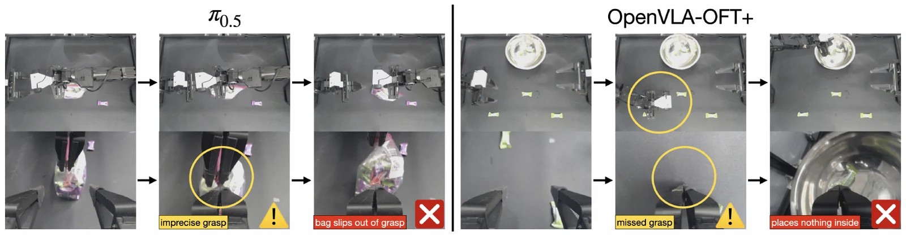 消融（Q2）。两个独立消融，梯度步数和完整版相同：(1) 去掉辅助目标（对辅助目标的损失加掩码：策略只学 \(p(a\mid s)\)，世界模型只学 \(p(s'\mid s,a)\)，价值不变），LIBERO 平均掉 1.5 点；(2) 从随机初始化训练，掉 3.9 点（表 4）。在 ALOHA 上从头训练的版本叠衬衫只得 80.8 分，比完整版低 18.7 分，动作还发抖，长期跑可能伤机器人，所以没测其他任务。更多消融在附录 A.4.1。 表 4：去辅助 \((97.6+99.8+96.7+94.0)/4=97.025\to97.0\)，\(98.5-97.0=1.5\)；从头 \((94.7+98.9+96.3+88.6)/4=94.625\to94.6\)，\(98.5-94.6=3.9\)。掉得最多的都是 Long（−3.6、−9.0）。ALOHA：完整版叠衬衫 Full 是 99.5，\(99.5-18.7=80.8\)，对得上。 结论：基于模型的 \(V(s')\) 规划在两个难任务上都有提升，平均 +12.5 分；无模型的 \(Q(s,a)\) 只略好于不规划。 LIBERO 和前两个 ALOHA 任务已经很高了，所以只在后两个任务、并且挑较难的初始条件（难的域内条件和域外条件）上测规划。 回放数据。前面直接策略评测本来就产生了所有方法的 505 条回放，再为密封袋任务多收 143 条 Cosmos Policy 的回放（这个任务相机被自身遮挡、动力学随机性大、差一毫米就成败不同，世界模型尤其难学），共 648 条。用它们精调基础检查点，得到规划模型。 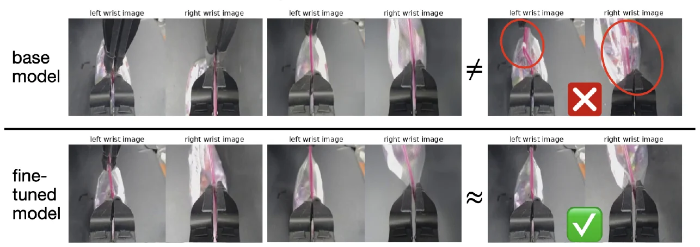 三种价值形式。精调时用输入掩码让价值只依赖一部分输入：\(V(s')\)（掩掉 \((s,a)\)）或 \(Q(s,a)\)（掩掉 \(s'\)）。\(V(s')\) 要先由世界模型预测未来状态；\(Q(s,a)\) 不需要未来状态，是无模型规划。（原文说“三种独立形式”，但只列了两种，另一种大概是初始训练时的 \(V(s,a,s')\)，原文没明说。） 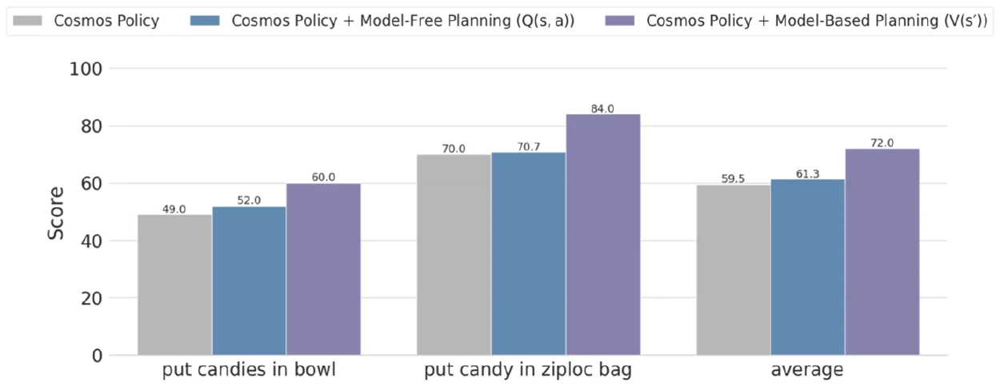 结果。\(V(s')\) 规划在两个任务上都提高了分数，平均 +12.5 分；考虑到用于精调的回放并不多，这是可观的提升。精调后的规划模型预测得更准（图 6），能避开基础策略犯的错误，比如开袋时滑块脱手。\(V(s')\) 好于 \(Q(s,a)\)，作者归因于它能利用学到的环境动力学，样本效率更高；回放少时 Q 函数难学，输入维度更高也可能过拟合。 平均：\((49+70)/2=59.5\)，\((52+70.7)/2=61.35\to61.3\)，\((60+84)/2=72.0\)，\(72.0-59.5=12.5\)，和正文一致。图 7 的基础策略在密封袋上只有 70.0，比表 3 的 85.4 低，说明这里确实换了更难的初始条件。 论文没写规划实验每个任务试了几次。两个任务每个子步都是 20 分，平均分必须是 \(20k/n\)。我枚举 \(n\le60\)：糖果碗的 49.0、52.0、60.0 同时成立要求 \(n\) 是 20 的倍数；密封袋的 70.0 和 70.7 同时成立要求 \(n\) 是 30 的倍数（例如 \(n=30\)：2,100/30 = 70.0，2,120/30 = 70.67）。所以最可能是糖果碗 20 次、密封袋 30 次。这是推断，未核实。 Cosmos Policy 在 LIBERO、RoboCasa、ALOHA 上都很强，加入回放精调世界模型和价值后，模型规划有效。局限：规划时推理很慢（一个动作块约 5 秒），不适合动态任务，加速搜索是重要方向；有效规划需要大量回放数据，能少用回放会更实用；目前只是一层的 best-of-N，延长世界模型的预测范围、搜得更深可能更有效。 项目网站发布了模型检查点、训练数据和代码（含训练和评测脚本）。训练和评测细节在附录 A.2、A.3。实际情况：LIBERO、RoboCasa、ALOHA 三个基础策略检查点和 LIBERO、RoboCasa 数据集都在 Hugging Face；ALOHA 规划模型用的 648 条回放没有公开（配置文件注释：“This rollouts dataset is not released”）。 先准备图像序列：各相机的画面，加上全零图作为新模态的占位。VAE 编码后，把占位对应的隐帧整块覆盖成归一化、复制过的本体、动作块和价值。以动作块为例：形状 \(K\times d_{act}\)，每一维先缩放到 [−1, +1]，展平成 \(K d_{act}\) 维向量，复制 \(\frac{H'W'C'}{K d_{act}}\) 次，reshape 成 \(H'\times W'\times C'\)，覆盖目标隐帧。本体和价值同理。 注入后给一部分隐帧加噪声（噪声水平见 A.2.1），模型在干净部分的条件下去噪。尽管这些模态预训练时没见过，微调后模型能学会生成它们。推理时反过来：对动作隐帧里所有副本取平均，再反归一化；价值是标量，对整个隐帧取平均，再映射回 [0, 1]。这些非图像模态不需要 VAE 解码。 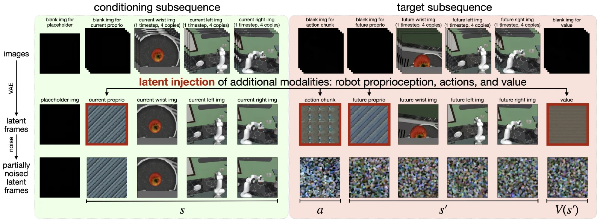 结论：训练时多给高噪声一些权重，推理时不走到最低噪声。 基础模型的 \(\sigma\) 采样是对数正态：\(\ln\sigma\sim\mathcal N(P_{mean},P_{std}^2)\)，\(P_{mean}=1.39\)，\(P_{std}=1.2\)。生成从 \(\sigma_{max}=80\) 的纯噪声开始，逐步降到接近 0。对数正态把权重集中在低噪声，模型在生成起点的高 \(\sigma\) 区信号不足，第一步去噪不准，误差一路累积。视频生成里问题不大，动作必须精确，就很有害。 所以训练时改用混合分布：0.7 的概率按原对数正态采，0.3 的概率在 [1.0, 85.0] 上均匀采。0.7/0.3 没有调过，只是想离原分布近一点、把高 \(\sigma\) 的尾巴拉长。推理时还发现 \(\sigma\approx0\) 的最后几步反而不如前面准（信噪比太低），于是把下限设为 \(\sigma_{min}=4\)（EDM 原本是 0.002），\(\sigma_{max}\) 仍是 80；在训练和验证样本上的 L1 误差确实更低。 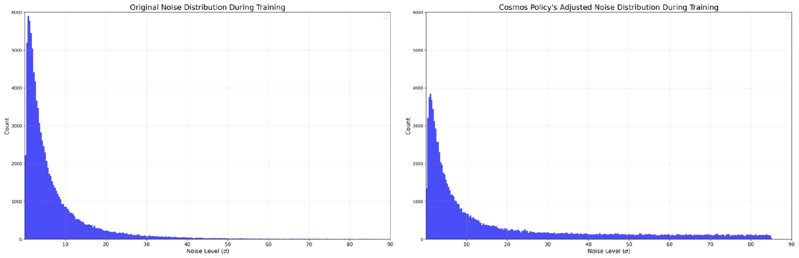 \(P_{mean}=1.39\) 就是 \(\ln4=1.386\)（代码 代码 40K 步，64 张 H100，全局 batch 1,920，共 48 小时。全参数微调。动作块 16 步，测试时整块执行再查询。40K 步时的单步训练 L1 损失：动作 0.012、未来本体 0.007、未来腕部图隐变量 0.068、未来第三人称图隐变量 0.036、价值 0.007。非图像模态都归一化到 [−1, 1]。这些是给定随机 \(\sigma\) 的单步损失，不是多步采样后的误差。数量级说明动作、本体、价值学得比图像快。 45K 步，32 张 H100，全局 batch 800，48 小时，全参数微调。动作块 32 步，执行 16 步再查询。损失：动作 0.016、未来本体 0.007、未来腕部 0.084、未来第三人称 0.048、价值 0.007。 所有方法都在四个任务合在一起的 185 条演示上训一个策略。Cosmos Policy：50K 步，8 张 H100，全局 batch 200，48 小时，全参数微调；动作块 50 步（25 Hz 下 2 秒），整块执行。损失：动作 0.010、未来本体 0.008、未来腕部 0.097、未来第三人称 0.085、价值 0.007。 基线用同样的算力预算（8 张 H100，48 小时）。因为各自训练速度不同，步数差别很大：π0.5 和 π0 是 400K 步（batch 256），OpenVLA-OFT+ 是 32K 步（batch 96，梯度累积 4）。训练损失一直在降、执行质量一直在升，所以都训了这么久。Diffusion Policy 只有约 150M 参数（其他是 2B 到 7B），在 1 张 H100 上从头训 48 小时，190 个 epoch，相当于 72K 步（batch 350）。除 Diffusion Policy 是 48 步外，动作块都是 50 步、整块执行。 batch：LIBERO 每卡 30 × 64 卡 = 1,920；RoboCasa 25 × 32 = 800；ALOHA 25 × 8 = 200，和配置里的 同样 48 小时 × 8 卡，样本数差很多：π0/π0.5 看了 400K × 256 = 1.02 亿个样本，Cosmos Policy 50K × 200 = 1,000 万个，OpenVLA-OFT+ 32K × 96 = 307 万个。“算力相同”指墙钟时间，不是样本数。 LIBERO 上 40K × 1,920 = 7,680 万个样本，一半是演示样本。若演示帧数和 OpenVLA 版的 273,465 帧同量级（Cosmos 版的帧数我没下载核对），相当于每帧演示被看了约 140 次。 直接当策略用时，动作、未来状态、价值一起并行生成，后两者丢掉（也可以存下来看策略“想”什么、估计进度）。LIBERO 和 RoboCasa 用 5 步去噪，ALOHA 用 10 步。带规划时依次自回归生成动作、未来状态、价值；真机规划实验里动作 10 步、未来状态 5 步、价值 5 步，未来状态集成 3 个、价值集成 5 个。 每个方法 101 次：put X on plate 30 次（20 域内 + 10 域外，时限 350 步 = 14 秒）、fold shirt 20 次（12 + 8，1,600 步 = 64 秒）、put candies in bowl 25 次（15 + 10，1,100 步 = 44 秒）、put candy in ziploc bag 26 次（20 + 6，1,100 步 = 44 秒）。 用分数而不是二元成功率，是为了反映完成到哪一步。 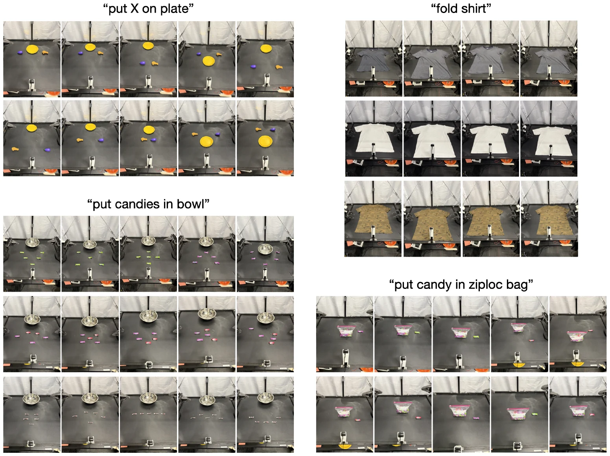 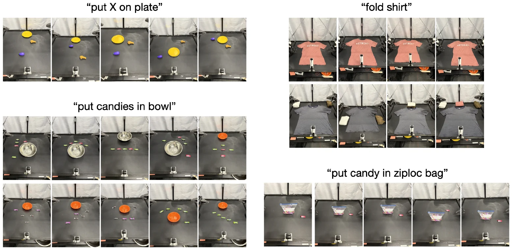 表 3 是图 4 的明细：Cosmos Policy 总分最高，但在域外条件上 π0.5（92.5）略高于它（89.3）。 “全部”是按每个任务的试验次数加权（域内 20/12/15/20、域外 10/8/10/6）。例：Cosmos Policy 糖果碗 \((15\times100+10\times74)/25=89.6\)，密封袋 \((20\times86+6\times83.3)/26=85.38\to85.4\)，叠衬衫 \((12\times99.2+8\times100)/20=99.52\to99.5\)。五个方法 × 四个任务的 20 格全部对得上（脚本核对）。各块的“平均”是四个任务的简单平均（Cosmos 全部 \((100+99.5+89.6+85.4)/4=93.625\)），不是按 101 次加权；按 101 次加权是 93.57，排名不变。图 4 的柱顶数字就是“全部”这一块。 回放计数也对得上：5 个方法 × 101 次 = 505 条，加 143 条 = 648 条。 表 4 · LIBERO 消融，成功率 %（照录原文）· 看原表 ↗ 结论：价值样本贡献很小，世界模型样本有用，策略样本里的“未来状态”辅助目标最关键。 每批 50/25/25 分给策略、世界模型、价值；同一条序列，掩码不同（图 12）。作者在 RoboCasa 上一次去掉一个部件，直到只剩一个只预测动作的“光杆”策略。每个版本超参和算力都一样，3,600 次评测。 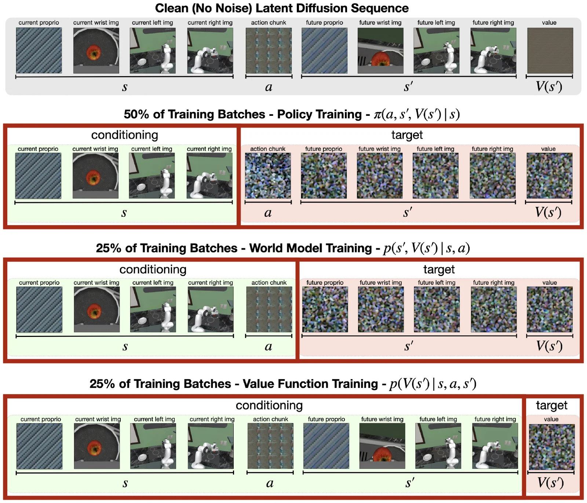 表 5 · RoboCasa 消融和补充实验，24 任务平均成功率 %（照录原文）· 看原表 ↗ 逐级差值：−0.5、−2.6、−1.5、−18.1。最后一步最大，说明让策略同时预测未来状态是 Cosmos Policy 有效的关键。 论文说 \(V(s')\) 是“掩掉 \((s,a)\)”。代码（ 我的理解（未核实）：训练时 \(\sigma\) 是随机抽的，低噪声时被“掩掉”的 \(s,a\) 帧其实还看得清，价值头在低 \(\sigma\) 样本上仍能偷看 \((s,a)\)。这不影响推理（推理时那些帧从纯噪声开始），但意味着“只依赖 \(s'\)”在训练分布里不是严格成立的。 1 张 H100 上并行生成动作、未来状态、价值：5 步去噪 0.61 秒（LIBERO、RoboCasa），10 步 0.95 秒（ALOHA），1 步 0.16 秒。RoboCasa 上 1 步去噪仍有 66.4%（表 5 底行），比 5 步快近 4 倍（0.61 / 0.16 = 3.8），只掉 0.7 点。这是生成一个动作块的时间：ALOHA 上机器人停 0.95 秒，换来 2 秒的动作。 真机规划用 N = 8，8 张 H100 各跑一个分支：每个分支先生成动作块（10 步），再生成 3 个未来状态（各 5 步），再为每个未来状态生成 5 个价值（各 5 步），共 4.9 秒。慢的推理在这些任务里没妨碍执行，但限制了动态操作或行走类任务。 表 5 图注写 1 步去噪“只掉 0.5%”，但 \(67.1-66.4=0.7\)。表 5 第 (1) 行正好是 −0.5，可能是串了。 规划的每个分支要做 \(10+3\times5+3\times5\times5=100\) 次网络前向，是直接策略（10 次）的 10 倍；4.9 秒对 0.95 秒是 5.2 倍。差距说明集成部分大概是成批跑的，或者自回归阶段只对部分帧去噪。论文没细说，代码我没跑，未核实。 结论：代码和论文基本一致；论文没写的超参（学习率、分辨率、增强、采样器）在配置里能找到；有几处小出入。代码只读未运行，commit 论文 A.2.2 和 HF 模型卡（ 论文 CC BY 4.0；代码 Apache-2.0；模型权重 NVIDIA One-Way Noncommercial License（NSCLv1，模型卡写明）；数据集卡写 这一节把论文、README、代码、Hugging Face 数据和模型卡里和 LIBERO 有关的设置列全，并和 OpenWAM 页“问 1”的协议对照表放在一起。先说结论： 下表 OpenVLA、OpenWAM、MolmoAct2 三列摘自 openwam.html#qa-libero（“训练数据”“动作块”“报告分数”三行是我补的），最后一列是本页从代码核对的 Cosmos Policy。 条数。你手上 OpenWAM / MolmoAct2 用的是 OpenVLA 版：Spatial 432、Object 454、Goal 428、Long 379，共 1,693 条（OpenWAM 页）。Cosmos 版按元数据是 430、456、438、376，共 1,700 条。四个套件都不同（−2、+2、+10、−3），说明重放时的仿真随机性改变了一部分演示的成败。数据集卡说是“确定性种子”重放，但 OpenVLA 当年没有用同样的种子，所以两边不可能逐条一致。 图像方向。OpenVLA 版在转 RLDS 时把图像旋转 180°（上下、左右都翻）；Cosmos 版只 和 99.3 比时注意：Cosmos Policy 的 98.5 是在比 OpenWAM 紧得多的步数上限（Long 520 对 700）、三种子平均下测的；两个数不是同一协议。按格子算，98.5 和 99.3 的差在 6,000 回合里约 48 个回合。 结论：两者都是“视频骨干 + 动作”的世界-动作模型，区别在动作怎样进模型。OpenWAM 页（§3.1）把 Cosmos Policy 归为“单系统”的代表作：没有独立的动作网络，动作塞进视频序列，和视频共用全部参数。OpenWAM-α 选的是“双系统联合自注意力”：独立的 1B ActionDiT 流，每层和视频流共享一次注意力。 对比结论要小心。OpenWAM 的 §4.2.1 表 1（RoboTwin2.0）里单系统 Vanilla 85.5、MoE 84.63，比双系统联合自注意力的 92.36 低约 7 点。但那是 OpenWAM 在自己的骨干、自己的训练配方下做的受控比较，不是复现 Cosmos Policy：它没有 Cosmos Policy 的隐帧复制写法、混合噪声分布、\(\sigma_{min}=4\) 截断，也没有世界模型和价值样本的联合训练。所以不能据此说 Cosmos Policy 的做法“差 7 点”。Cosmos Policy 自己的消融（表 5）显示，让策略同时预测未来状态这个辅助目标值 18 点，这一点和 OpenWAM“动作要能看到世界”的结论方向一致。 OpenWAM 表 5 里的 Cosmos-Policy。OpenWAM 页 LIBERO-Plus 表里有 Cosmos-Policy 一行（平均 82.2，高于 OpenWAM-α 的 69.2，Camera 75.8 对 33.8）。Cosmos Policy 论文本身没有 LIBERO-Plus 实验，这个数是 OpenWAM 引的。一个参考：同为 Cosmos 骨干、像素级视频隐变量，Cosmos Policy 对相机扰动并没有 OpenWAM-α 那么敏感，所以 OpenWAM 把短板归于“像素级隐变量”的解释至少不完整（这是我的推断）。 七项简单平均 \((75.8+63.3+81.7+96.5+88.9+92.7+82.2)/7=83.0\)，表里平均写 82.2。LIBERO-Plus 各扰动的样本数不同，平均可能是按样本加权的；我没有核对 LIBERO-Plus 的样本数，未核实。这个出入在 OpenWAM 原文的表里，不是 Cosmos Policy 论文的问题。 复现用户的角度：如果你想在 OpenWAM 框架里试 Cosmos 骨干，OpenWAM 支持的是 Predict2.5-2B（ 论文 §3 和代码配置（ 以下各条都是本页加的核算或对照，不属于论文内容。点编号跳到对应位置。 论文没写、我也没找到的：规划实验每个任务的试验次数；规划模型精调的步数；RoboCasa 逐任务成功率；Cosmos 版 LIBERO 数据的总帧数（要下载 HDF5 才能数）。 文中提到的数据集、基准、模型和方法。除标注的以外，链接在 2026 年 11 月 16 日用脚本核对都返回 200。4Cosmos Policy：把视频模型改造成控制和规划
4.1隐帧注入：加入新模态
cosmos_policy_experiment_configs.py 第 116 行 state_t=9，注释列出“空白、本体、腕部、主相机、动作、未来本体、未来腕部、未来主相机、价值”；第 123 行 chunk_duration=33 = 1 张空白 + 8 个模态 × 4 张复制。核算：\(1+32/4=9\)。RoboCasa 和 ALOHA 都是 state_t=11、chunk_duration=41（\(1+40/4=11\)）；RoboCasa 是左右两个第三人称加腕部，ALOHA 是一个俯视加两个腕部。论文正文的 11 帧例子对应后两者。resolution="224"：224 × 224 的图经 VAE 8 倍下采样得 28 × 28，16 通道，一个隐帧有 \(28\times28\times16=12{,}544\) 个数。DiT 的 patch 是 2 × 2（patch_spatial=2），每个隐帧 \(14\times14=196\) 个 token，LIBERO 9 帧共 1,764 个 token，RoboCasa / ALOHA 11 帧共 2,156 个。policy_text2world_model.py 的 replace_latent_with_action_chunk）是向上取整重复再截断；读出时（cosmos_utils.py 的 extract_action_chunk_from_latent_sequence）只对完整的 ⌊12,544/700⌋ = 17 份取平均，多出的半份丢掉。价值是一个标量，整块 12,544 个数取平均。4.2联合训练策略、世界模型和价值函数
libero_dataset.py 的数据集参数是 demonstration_sampling_prob=0.5、success_rollout_sampling_prob=0.5：回放那一半里，成功和失败回放再按 1:1 重采样（dataset_common.py 第 196–215 行通过放大计数来平衡）。然后每个回放样本以 0.5 的概率当世界模型样本、否则当价值样本（libero_dataset.py 第 549–558 行）。所以期望比例是 50/25/25，但失败样本被大幅过采样：LIBERO 2,000 条里只有 300 条失败（按 HF 元数据算，读者注 15），代码却让它们占回放样本的一半。论文没提这一点。4.3用世界模型和价值函数规划
dataset_common.py 的 compute_monte_carlo_returns：最后一步奖励为 1（成功）或 0（失败），往前每步乘 \(\gamma\)，再线性映射 \(2G-1\) 到 [−1, 1]。取的是第 \(t+K\) 帧（未来帧）的回报。LIBERO 和 RoboCasa 用 \(\gamma=0.99\)：离结束 100 步时 \(G=0.99^{100}=0.366\)，200 步时 0.134，LIBERO-Long 最长演示开头（约 488 步外）只有 0.0074。所以对于全是成功的演示，价值更像“离完成还有多远”，不是成功概率。ALOHA 规划模型改用 \(\gamma=0.998\)（配置注释：回合可达 1,500 到 2,000 步）。cosmos_utils.py 第 794–814 行：阈值 success_threshold = 0.05（在 [0, 1] 尺度上），超过阈值的票数 ≥ 一半才算“多数成功”，返回成功组的均值，否则返回 0。论文只说“固定阈值”。用 \(\gamma=0.998\) 时，成功前 \(n\) 步的价值低于 0.05 要求 \(n>\ln0.05/\ln0.998\approx1{,}496\) 步；两个做规划的任务上限都是 1,100 步（\(0.998^{1100}=0.11\)），所以成功轨迹上的状态不会被这个阈值误判成失败。5实验
5.1实验设置
5.2和最好的模仿策略比（不带规划）
方法 Spatial Object Goal Long 平均 Diffusion Policy 78.3 92.5 68.3 50.5 72.4 Dita 97.4 94.8 93.2 83.6 92.3 π0 96.8 98.8 95.8 85.2 94.2 UVA – – – 90.0 – UniVLA 96.5 96.8 95.6 92.0 95.2 π0.5 98.8 98.2 98.0 92.4 96.9 Video Policy – – – 94.0 – OpenVLA-OFT 97.6 98.4 97.9 94.5 97.1 CogVLA 98.6 98.8 96.6 95.4 97.4 Cosmos Policy 98.1 100.0 98.2 97.6 98.5 方法 每任务训练演示 平均成功率 GR00T-N1 300 49.6 UVA 50 50.0 DP-VLA 3000 57.3 GR00T-N1 + DreamGen 300（+10000 合成） 57.6 GR00T-N1 + DUST 300 58.5 UWM 1000 60.8 π0 300 62.5 GR00T-N1.5 300 64.1 Video Policy 300 66.0 FLARE 300 66.4 GR00T-N1.5 + HAMLET 300 66.4 Cosmos Policy 50 67.1 5.3带模型规划的评测
6讨论
7可复现性声明
A.1隐帧注入的实现细节
A.2训练细节
A.2.1噪声分布
p_mean=1.3862943611198906，注释“Copied from base model config”），即中位数 \(\sigma=4\)。用正态分布函数算：原分布 \(P(\sigma>20)=9.0\%\)，混合后 \(0.7\times9.0\%+0.3\times\frac{85-20}{84}=29.5\%\)；\(P(\sigma>40)\) 从 2.8% 到 18.0%；\(P(\sigma>80)\) 从 0.6% 到 2.2%。也就是说高噪声样本多了三到六倍。hybrid_edm_sde.py 和论文一致（0.7 / 0.3，均匀 [1, 85]）。训练配置里 sigma_max=200、sigma_min=0.01 沿用基础模型；推理配置 __inference_only 改成 sigma_max=80、sigma_min=4，和论文一致。推理默认采样器是 2ab（二阶 Adams–Bashforth 多步法，cosmos_sampler.py），论文没提。A.2.2LIBERO 训练
A.2.3RoboCasa 训练
A.2.4ALOHA 训练
batch_size 一致。README 给的 8 卡复现方案是每卡 30 × 8 卡 × 梯度累积 8 = 1,920。演示 80 + 15 + 45 + 45 = 185。A.3评测细节
A.3.1通用设置
A.3.2ALOHA 真机评测
各任务的域内 / 域外条件和评分细则（点开）
表 3 · ALOHA 域内 / 域外 / 全部分数（照录原文，点开）
方法 put X on plate fold shirt candies in bowl candy in ziploc bag 平均 域内 Diffusion Policy 85.0 23.3 37.3 11.0 39.2 OpenVLA-OFT+ 87.5 99.2 22.7 59.0 67.1 π0 97.5 98.3 73.3 56.0 81.3 π0.5 97.5 99.2 98.7 56.0 87.8 Cosmos Policy 100.0 99.2 100.0 86.0 96.3 域外 Diffusion Policy 20.0 23.8 26.0 26.7 24.1 OpenVLA-OFT+ 30.0 100.0 20.0 56.7 51.7 π0 60.0 98.8 68.0 60.0 71.7 π0.5 100.0 100.0 90.0 80.0 92.5 Cosmos Policy 100.0 100.0 74.0 83.3 89.3 全部（域内 + 域外） Diffusion Policy 63.3 23.5 32.8 14.6 33.6 OpenVLA-OFT+ 68.3 99.5 21.6 58.5 62.0 π0 85.0 98.5 71.2 56.9 77.9 π0.5 98.3 99.5 95.2 61.5 88.6 Cosmos Policy 100.0 99.5 89.6 85.4 93.6 A.4补充实验和细节
Spatial Object Goal Long 平均 Cosmos Policy 98.1 100.0 98.2 97.6 98.5 (1) 去掉辅助损失 97.6 99.8 96.7 94.0 97.0 (2) 不用预训练权重 94.7 98.9 96.3 88.6 94.6 A.4.1更多消融（RoboCasa）
版本 平均 Cosmos Policy（5 步去噪） 67.1 (1) 去掉价值样本（50% 策略 + 50% 世界模型） 66.6 (2) 再去掉世界模型样本（100% 策略） 64.0 (3) 再去掉策略样本里的价值辅助目标，学 π(a, s′ | s) 62.5 (4) 再去掉未来状态辅助目标，只学 π(a | s) 44.4 Cosmos Policy，1 步去噪 66.4 policy_video2world_model.py 第 176–270 行）的做法不是把这些帧删掉，而是把它们的条件掩码设成 0：这些帧和目标一样被加噪，不再作为干净条件；同时 policy_text2world_model.py 的损失掩码只保留价值帧的损失。推理时这些帧从噪声开始，和价值一起被去噪，所以价值只能依据 \(s'\)。A.4.2推理延迟
代码对照
18a2acc（2026-01-22），Apache-2.0；权重 NSCLv1（非商业）。项 论文 代码（18a2acc） 基础模型 Cosmos-Predict2-2B-Video2World hf://nvidia/Cosmos-Predict2-2B-Video2World/model-480p-16fps.pt；网络 28 块、宽 2048、16 头、patch 2 × 2（COSMOS_V1_2B_NET_MININET）输入分辨率 没写 resolution="224"，resize_online=True；隐帧 28 × 28 × 16文本 T5-XXL 预先算好的 T5 嵌入（ t5_embeddings.pkl）；text.dropout_rate=0.0（注释：否则可能不跟指令）优化 没写 lr 1e-4（基础配置 weight_decay 0.1）；warmup 1,000 步，前 30K 步一个衰减周期，之后固定为 0.06 倍（注释 “sharp learning rate decay after 30K steps”）；不用 EMA 步数 LIBERO 40K HF 模型卡 40,000；但 README 和评测脚本的示例 --run_id_note chkpt45000（读者注 13）噪声 0.7 对数正态 + 0.3 均匀 [1, 85]；推理 σ ∈ [4, 80] 一致（ hybrid_edm_sde.py；__inference_only 配置）图像增强 没写 训练：90% 面积随机裁切、±5° 旋转、亮度 ±0.3、对比度 ±0.4、饱和度 ±0.5、色相 ±0.05（ dataset_utils.py 第 289–366 行）；测试：90% 面积中心裁切再缩回批次构成 50/25/25 同，外加成功/失败回放 1:1 重采样（读者注 3） 价值目标 \(\gamma^{H-t}R\) \(2G-1\)，\(\gamma=0.99\)；ALOHA 规划模型 0.998（读者注 4） “掩掉 (s, a)” 输入掩码 把这些帧改成去噪目标并屏蔽其损失（读者注 11） 多数均值阈值 “固定阈值” 0.05，票数 ≥ 一半 规划模型精调 90% 世界模型 + 价值，10% 策略 demonstration_sampling_prob=0.1；warmup 1,500，第一个周期 15K 步；从 50K 步检查点继续；精调总步数论文和配置都没写死（max_iter 沿用 1,000,000）采样器 没写 2ab 多步法；1 步时直接一次去噪nvidia/Cosmos-Policy-LIBERO-Predict2-2B，sha cb689ec）都写 40K 步；但 LIBERO.md 和 run_libero_eval.py 第 65 行的示例命令里 --run_id_note chkpt45000--5stepAct--seed195--deterministic，RoboCasa 的示例也是 chkpt45000（论文 RoboCasa 是 45K）。run_id_note 只是日志名，不影响加载哪个文件（文件名是 Cosmos-Policy-LIBERO-Predict2-2B.pt，没有步数）。可能是从 RoboCasa 命令复制过来的。我无法从权重本身判断步数，未核实。license: cc，没说是哪一种 CC。复现做研究没问题，商用要注意权重许可。LIBERO 训练和评测设置
np.flipud），不是旋转 180°。和 OpenVLA 版数据混用会出问题（读者注 15）。--deterministic True。项 设置 出处 训练数据 数据集 nvidia/LIBERO-Cosmos-Policy（sha b463cbd）。success_only/ 四个套件的成功演示，训练策略；all_episodes/ 2,000 条全部回放（成功 + 失败），训练世界模型和价值LIBERO.md；数据集卡；配置第 41–61 行 成功条数 Spatial 430、Object 456、Goal 438、Long 376，共 1,700 四个 *_metainfo.json 的 success 字段，我用脚本数的预处理 在环境里重放演示；256 × 256；删掉空动作；JPEG 压缩；确定性种子 regenerate_libero_dataset.py 文件头；数据集卡图像方向 np.flipud（只上下翻转），训练数据和评测两边一致regenerate_libero_dataset.py 第 242 行；libero_utils.py 第 45–57 行输入 agentview + 腕部两张图（模型内 224 × 224），本体 9 维 = 夹爪 2 + 末端位置 3 + 四元数 4；T5 文本 run_libero_eval.py 第 334 行；constants.py输出 动作块 16 × 7；未来本体（t + 16）；未来两张图；价值 模型卡； constants.py增强 “更强”增强：90% 随机裁切、±5° 旋转、颜色抖动；评测时 90% 中心裁切 use_stronger_image_aug=True训练 规模 40K 步，全局 batch 1,920（每卡 30 × 64 卡），48 小时，全参数 A.2.2；README 的 8 卡方案用梯度累积 8 优化 lr 1e-4，warmup 1,000，30K 步后降到 0.06 倍 配置第 99–107 行 停止标准 README 建议训到动作 L1 约 0.010（论文 40K 步时 0.012）；并提醒“用训练时的同款 GPU 评测，否则成绩可能明显下降” LIBERO.md 末段 评测 回合 每任务 50 次，默认初始状态（第 k 回合用第 k 个），每套件 500 次，不跳过 num_trials_per_task=50；initial_states_path="DEFAULT"（第 678–681 行）开局空等 10 步空动作 [0,0,0,0,0,0,−1]（夹爪张开）NUM_STEPS_WAIT = 10（第 394 行）；libero_utils.py 第 40–42 行最长步数 Spatial 220、Object 280、Goal 300、Long 520（不含空等） TASK_MAX_STEPS（第 172–178 行）执行 动作块 16 步整块执行再查询；去噪 5 步；并行解码（未来状态、价值各 1 步，不影响动作） LIBERO.md 命令 种子 195、196、197 各一次，平均； --deterministic True（每步把随机种子重设为 0，cuDNN 确定性）；环境 env.seed(0)LIBERO.md 注；第 397–399、807–808 行； libero_utils.py 第 36 行渲染 256 × 256 env_img_res=256环境版本 README 说结果在 Python 3.12.3（和 3.10.18）、PyTorch 2.7.0、H100 上得到；LIBERO 代码版本 README 没固定（未核实） LIBERO.md 和 OpenWAM 页协议表并列
项 OpenVLA OpenWAM（你复现的） MolmoAct2 Cosmos Policy 设定 每套件单独一个模型 四套件合训一个 四套件合训一个 四套件合训一个 训练数据 OpenVLA 重生成版 1,693 条 同左，转 LeRobot 同左，转 LeRobot 自己重生成：成功 1,700 条 + 全部 2,000 条 每任务回合 50 50 50 50（× 3 个种子） 开局空等 10 步 30 步（夹爪张开） 50 步 10 步（夹爪张开） 最长步数 S / O / G / L 220 / 280 / 300 / 520 600 / 600 / 600 / 700 280 / 280 / 300 / 520 220 / 280 / 300 / 520 种子 7 42（只设一次） 1000（每回合导出） 195 / 196 / 197，确定性模式 渲染和方向 256，旋转 180° 256，旋转 180° 360，旋转 180° 256，只上下翻转；90% 中心裁切；模型内 224 动作块 / 执行 1（原版无动作块；OFT 为 8） 32 / 32 10 / 10 16 / 16 报告分数 76.5 99.3（单种子 2,000 回合） 见 MolmoAct2 页 98.5（三种子 6,000 回合） np.flipud（只上下翻）。两者差一次左右镜像。Cosmos 代码自己训练和评测一致，没问题；但如果把 Cosmos 的检查点拿到 OpenVLA 风格的评测脚本里，或者用 OpenVLA 版数据训 Cosmos Policy，画面会左右颠倒，Spatial 这种靠“左边/右边”区分的任务会受影响。
--seed 分别 195、196、197，--deterministic True，--flip_images True，--use_jpeg_compression True（输入前先 JPEG 编解码，模拟训练数据的压缩），--trained_with_image_aug True（启用测试时中心裁切）。initial_states_path：默认 50 个初始状态全测。设成 JSON 文件时代码会跳过演示失败的那些初始状态（第 684–687 行），回合数变少、分数会偏高。和 OpenWAM 的关系
Cosmos Policy OpenWAM-α 视频骨干 Cosmos-Predict2-2B-Video2World（2B，Wan2.1 VAE，T5 文本） Wan2.2-TI2V-5B；Infra 另外支持 Cosmos-Predict2.5-2B 和 Cosmos3-Edge-4B 动作怎么进模型 写成一个隐帧（28 × 28 × 16 的体积里重复铺 112 遍），和图像隐帧走同一个 DiT 的同一套参数 32 个动作 token 进独立 ActionDiT（30 层，宽 1024），每层和视频 token 拼成一个序列做联合注意力再拆回 动作的去噪 和视频共享一个 σ；EDM，推理 σ ∈ [4, 80]，5 步 两流独立抽时间步（流匹配），推理同步 10 步 未来视频 只预测一个未来时刻（t + 16）的两张图 预测 2 个未来隐帧（对应 8 个视频帧） 额外输出 未来本体、未来价值，可做 best-of-N 规划 没有价值头 训练 只在目标平台演示上微调（无机器人预训练） 先在 518.5M 帧上预训练，再在 LIBERO 微调 LIBERO 98.5（三种子，OpenVLA 步数上限） 99.3（单种子，600 / 700 步上限） configs/model/video_backbone/cosmos_predict25_2b.yaml），不是 Cosmos Policy 用的 Predict2-2B；两者的分别见 Cosmos-Predict2.5 页。OpenWAM 的单系统 Vanilla 结构在概念上最接近 Cosmos Policy，但动作是以 token 而不是“复制铺满的隐帧”形式进入。load_path=.../Cosmos-Predict2-2B-Video2World/model-480p-16fps.pt）一致：基础模型是 2025 年的 Cosmos-Predict2-2B，480p、16 fps 版本。它继承的基础训练配置（Stage-c_pt_4-Index-102-Size-2B-Res-480-Fps-16）是 \(P_{mean}=\ln4\)、\(P_{std}=1.2\)、σ ∈ [0.01, 200]、每段 24 个隐帧。Cosmos Policy 把它用在 224 × 224、9 到 11 个隐帧的短序列上，远小于预训练的 480p、24 隐帧。OpenWAM 里的 Cosmos 骨干是后来的 Predict2.5 和 Cosmos 3，不是同一个检查点。读者注汇总
链接表
名称 是什么 主页 论文 Cosmos Policy 本文 代码 · HF 2601.16163 LIBERO 仿真操作基准 libero-project.github.io · 本站 LIBERO 页 2306.03310 LIBERO-Cosmos-Policy 本文重生成的 LIBERO 数据 huggingface.co/datasets/nvidia/LIBERO-Cosmos-Policy – RoboCasa 厨房仿真基准 robocasa.ai 2406.02523 MimicGen 自动生成演示 mimicgen.github.io 2310.17596 ALOHA 低成本双臂平台，ACT tonyzhaozh.github.io/aloha 2304.13705 Cosmos-Predict2 基础视频模型 huggingface.co/nvidia/Cosmos-Predict2-2B-Video2World Cosmos 平台 2501.03575 · 本站 Cosmos 页 Wan2.1 VAE 来源 github.com/Wan-Video/Wan2.1 · 本站 Wan 页 2503.20314 EDM 扩散训练公式 – 2206.00364 OpenVLA-OFT 基线；LIBERO 预处理来源 openvla-oft.github.io 2502.19645 π0.5 基线（主页对脚本返回 429 限流，未能核对） physicalintelligence.company 2504.16054 Diffusion Policy 基线 diffusion-policy.cs.columbia.edu 2303.04137 UVA 统一视频-动作模型 – 2503.00200 Video Policy 视频生成器即策略 – 2508.00795 GR00T N1 基线；RoboCasa 协议 本站 GR00T 页 2503.14734 OpenWAM 对照 本站 OpenWAM 页 2609.07398